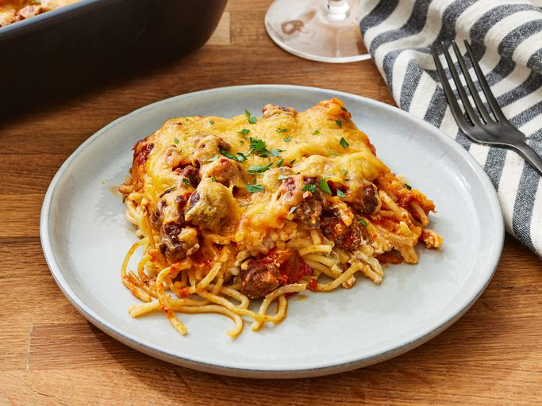

Spaghetti

Photo by Dotdash Meredith Food Studios
Description
This classic homemade spaghetti features tender pasta with a rich,
savory meat sauce. It's a hearty, comforting dish that's perfect for family
dinners and weeknight meals. The combination of simple ingredients
creates a satisfying meal that everyone will love.
Ingredients
- Spaghetti
- Beef
- Spaghetti Sauce
- Butter
- Cottage Cheese, Cream Cheese, & Sour Cream
- Cheese
Steps
- Boil the spaghetti in salted water, then drain and set aside.
-
Cook the beef on the stove and discard the grease. Transfer to a bowl
and mix in the spaghetti sauce.
-
Prepare the baking dish, then spread half of the noodles in the bottom.
-
Top with the mixture of cottage cheese, cream cheese, and sour cream.
- Cover with remaining spaghetti and butter.
-
Pour the beef mixture over the spaghetti and spread in an even layer.
-
Bake for 30 minutes, top with cheese, and continue baking until the
cheese is melted.
Home